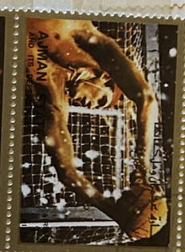
| SOURCE | TITLE| IMAGE MATCH | click to source page |
| Paris London Hong Kong | Leonardo Kaplan: Learning to Cry Like a River in Spring | P○L○HK | 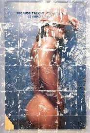 |
| The Book Merchant Jenkins | Not Only Sport (Complete Set, 6 Volumes) - The Book Merchant Jenkins | 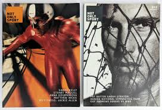 |
| AbeBooks | Hard Man Play by Mcgrath Tom - AbeBooks | 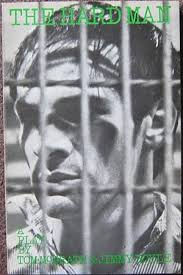 |
| eBay | Bad Sorts 1980 Movie Ticket Stub Japan Film Japanese Keiko Matsuzaka | eBay | 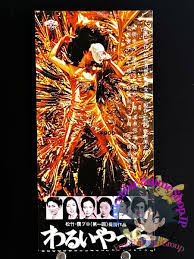 |
| Bandcamp | Music | APOCALYPSE MUSIC GROUP | 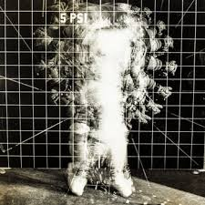 |
| Gallery 98 | Gallery 98 | The New Portrait, Group Show with Warhol, Basquiat, and others, curated by Jeffrey Deitch, Poster with Warhol's Portrait of Basquiat, P.S. 1, April – June 1984 | 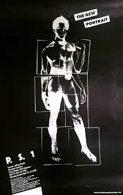 |
| eBay | POSTCARD NASA Space Suit Testing MINT Unused | eBay | 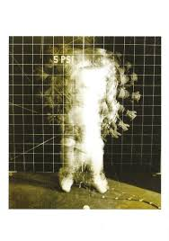 |
| Letterboxd | Lucky Sky Diamond (1989) directed by Izo Hashimoto • Reviews, film + cast • Letterboxd | 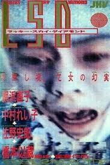 |
| Alamy | THE FILMS OF THE BROTHERS QUAY, Japanese poster art, 1987, ©Zeitgeist Films/courtesy Everett Collection Stock Photo - Alamy | 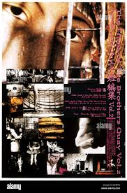 |
| Bonhams | Bonhams : A Boris Karloff group of oversized portraits from the Frankenstein films, one from the collection of makeup artist Jack Pierce | 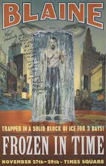 |
| GameSpot | Weekly Shonen King #376 - No. 39, 1970 (Issue) | 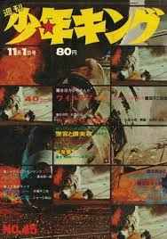 |
| X | katrina sluis (@k_treen) / Posts / X | 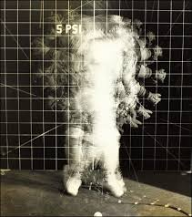 |
| Posteritati Movie Poster Gallery | Marat Sade Original 1967 Japanese B2 Movie Poster - Posteritati Movie Poster Gallery | 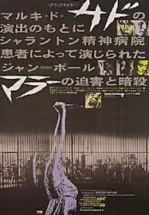 |
| corbelarchitecture.com | 1964 “Torch Runner” Tokyo Olympics Vintage Poster | 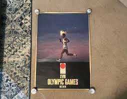 |
| Reelgood | Sensation of the Century (1966): Where to Watch and Stream Online | Reelgood | 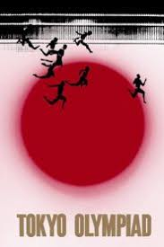 |
| dutch graphic roots | Hartmut Kowalke – dutch graphic roots | 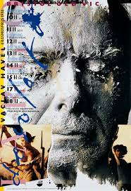 |
| The French bimonthly magazine « Le Nouveau Planète », published between 1968 and 1971, was a successor to Planète (1961-1971) by Louis Pauwels and Jacques Bergier. It explored themes of fantastic realism, | 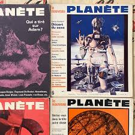 | |
| IMDb | Tommy (1975) | 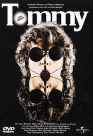 |
| Etsy | The Prisoner Official, Patrick Mcgoohan, the Prisoner is a 1967 British Avant-garde Social Science Fiction Television Series - Etsy | 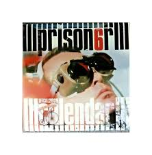 |
| IMDb | The Wicker Man (1973) | 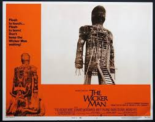 |
| Tetsuo The Iron Man' (1989) was one of THE must-see nutso-gonzo horror movies when I was growing up! Visionary body horror maestro, Shinya Tsukamoto somewhat rudely rewired my bong-softened brain! From cider | 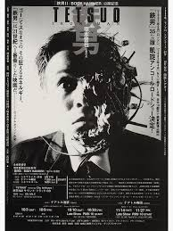 | |
| Best Similar | Best Movies Like Tetsuo II: Body Hammer | BestSimilar | 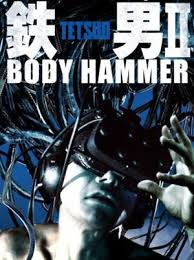 |
| Mr Poster | Operetka (Operetta) - Mr Poster | 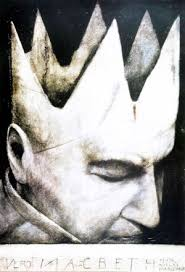 |
| Alamy | Olympic poster summer hi-res stock photography and images - Alamy | 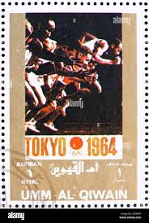 |
| Milano Cortina 2026 | Atlanta 1996 Olympic Games / [ a cura del CONI ; [ed. Mario Pescante] - Olympic World Library | 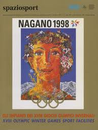 |
| eBay | Madonna Rebel Heart Tourbook | eBay | 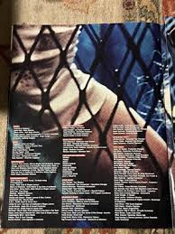 |
| Letterboxd | Tetsuo: The Iron Man' review by SilentDawn • Letterboxd | 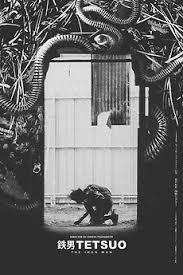 |
| IMDb | The Catch (1961) - IMDb | 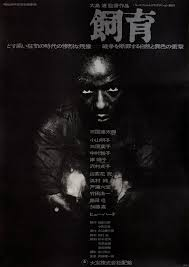 |
| ceramiccoatpros.com | Atlanta 1996 Olympic Summer Games Beach Towel | 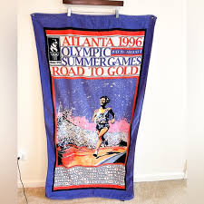 |
| Chairish | 1986 Polish Movie Poster, Jezioro Bodeńskie (Janusz Zaorski, Dir.) - Pagowski | Chairish | 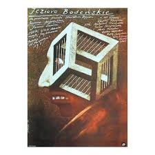 |
| Careers Unlimited | Lot of 3 Vintage Nugget Magazines 1962 1964 | 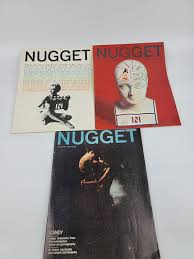 |
| Sneaker News | Nike Basketball Catalog From 1990 - SneakerNews.com | 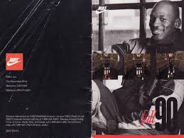 |
| majordhometahiti.com | Arturo Fuente Gran Reserva No. 4 (Corona) Zigarren Dominikanische Australia | 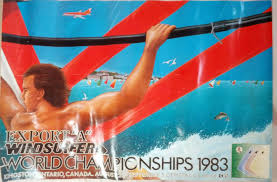 |
| Soccer Photos for Sale - Photos.com | 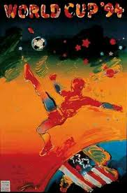 | |
| The best folk horror movie ever made was released on this day in 1973. | 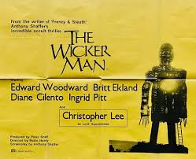 | |
| IMDb | UEFA Euro 1988 (TV Mini Series 1988) - IMDb | 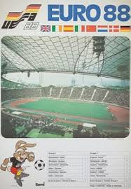 |
| eBay | Marat/Sade Japan B2 movie poster 1968 Marquis De Sade EX Rare!! | eBay | 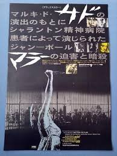 |
| aries is heading back to Australia and New Zealand this year, bringing the Glass Jaw World Tour! Catch him in Auckland, Brisbane & Perth this May. Grab your tickets now via link | 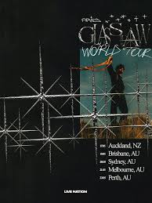 | |
| IMDb | Paper Man (TV Movie 1971) - IMDb | 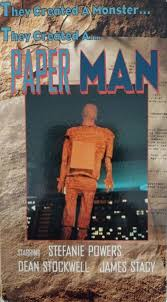 |
| Internet Archive | Aktueller Software Markt (ASM) Magazine (December 1994) : Free Download, Borrow, and Streaming : Internet Archive | 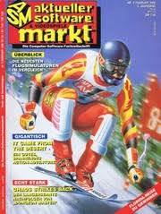 |
| jozefSquare | The Girl on the Broomstick Movie Poster, 70s Poster Art | 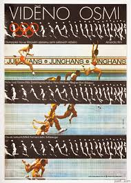 |
| Genius | Propaganda (Band) – Dream Within a Dream (analogue variation) Lyrics | Genius Lyrics | 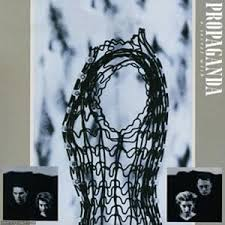 |
| IMDb | Shaft's Big Score! (1972) | 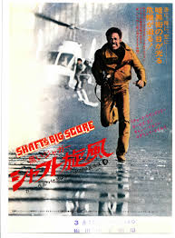 |
| True Matters OUT NOW on all platforms w the brothers @rebiirthoffical_ Lets Shake! @leapmusicrecords #Elavation is key! | 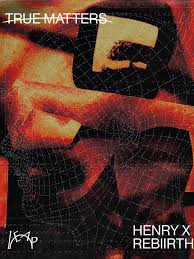 | |
| SportsCardsPro | Michael Jordan #3 Prices | 1994 Upper Deck Jordan Rare Air | Basketball Cards | 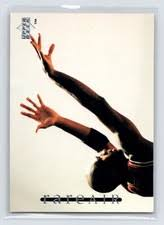 |
| Alamy | The Gods of the Stadium (Olympia Film by Leni Riefenstahl). Museum: PRIVATE COLLECTION Stock Photo - Alamy | 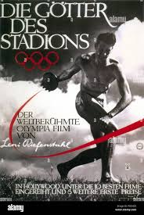 |
| Y'all check out the remastered version of “ Mexican Inside “ by No Sett Trippin Records artist and CEO Juan Gotti🤘🏻🤘🏻🤘🏻🔥🔥🔥. What it do, Joel Ray Romo of Romo Promotions🫡🫡 https://www.facebook.com/share/1FXmR7q1x6/?mibextid=wwXIfr | 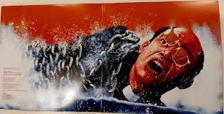 | |
| IMDb | Shadowman' First Look: Tribeca Documentary Explores the Life of '80s NY Street Artist Richard Hambleton — Watch - IMDb | 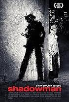 |
| Graphics for the @redstarfc 2025/2026 season jerseys by @tomducarouge Texture research using concrete, based on the former Bauer stadium stand AD @tomducarouge Photos @maxime_space Production @redstarfc | 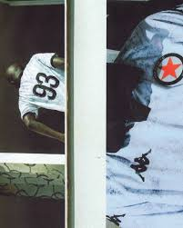 | |
| eBay | Soviet poster.Olympics 80.Moscow.Zudozhniki Germany.Jumping, all-around SPORTS. | eBay | |
| IMDb | Fontan (1988) - IMDb | |
| A look back at the art and design of past posters from the Winter Olympics. Early Winter Olympic posters played a larger role than simple promotion. They helped define the visual identity | ||
| First collage in almost 3 years. As I was making this, I heard about an 🧊 agent in Minneapolis who shot a defenseless citizen. Protect your community and look out for each | ||
| Amazon.com | G.: A Novel (Man Booker Prize Winner) (Vintage International): Berger, John: 9780679736547: Amazon.com: Books | |
| Hiruko The Goblin (1990) - Shinya Tsukamoto. A seasoned archaeologist and his mustard keen pupil disastrously disturbs an ancient, demon-possessed burial ground, inadvertently unleashing the hatefully head harvesting, horribly arachnoid hobgoblin Hiruko! | ||
| Intelak | Atlanta 1996 The Official NBC Viewers Guide Program | |
| Discogs | Peter Gabriel – Growing Up Live – 3 x Vinyl (180 Gram, Half-Speed Remaster, LP, Album, Remastered), 2020 [r16281005] | Discogs | |
| moom bookshop | Design - Japanese Books | moom bookshop - art books and magazines | |
| Alamy | MOVIE POSTER, THE WICKER MAN, 1973 Stock Photo - Alamy | |
| IMDb | The Unemployed (Short 1968) - IMDb |